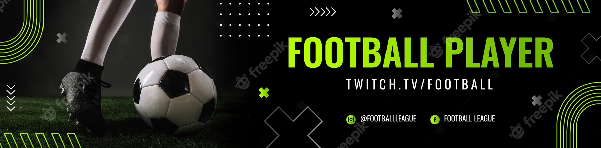

football, also called association football or soccer, game in which two teams of 11 players, using any part of their bodies except their hands and arms, try to maneuver the ball into the opposing team’s goal. Only the goalkeeper is permitted to handle the ball and may do so only within the penalty area surrounding the goal. The team that scores more goals wins. Football is the world’s most popular ball game in numbers of participants and spectators. Simple in its principal rules and essential equipment, the sport can be played almost anywhere, from official football playing fields (pitches) to gymnasiums, streets, school playgrounds, parks, or beaches.

Famous Players in Football
MESSI:arcelona's Lionel Messi is without a doubt one of our generation's best players. Messi, who debuted as a fresh-faced La Masia kid in 2005, managed to establish himself as one of the game's top players, first under Frank Rijkaard and then, more significantly, under Pep Guardiola.
RONALDO:Cristiano Ronaldo is a part of Real Madrid's history and will be remembered as one of the club's greatest icons. He scored 451 goals in 438 competitive matches for Real Madrid. Because of his great devotion and dedication, as well as his extraordinary talent,
Ronaldo is among the most recognizable names in international football today.
HOW TOPLAYFOOTBALL
Upcoming Events
2023 Feb 1-11 FIFA Club World Cup Morocco
2023 May 20-Jun 11 FIFA U-20 World Cup Argentina
2023 Jun 3 FA Cup final Wembley Stadium, London
2023 Jun 10 UEFA Champions League Final Atatürk Olympic Stadium, Istanbul, Turkey
2023 Jun 14-18 UEFA Nations League
2023 Jul 10 - Aug 20 Women's World Cup Australia / New Zealand
2023 Aug? UEFA Super Cup Ak Bars Arena in Kazan, Russia